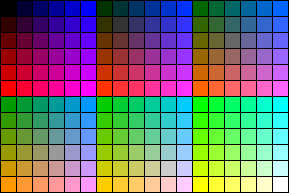

|
| ||
|
| ||
Steve Pruitt
Updated: April 17, 1998
The following questions and answers were compiled from the IE-HTML mailing list. For information on subscribing to IE-HTML or other mailing lists, see Mailing Lists on this Web site.
Contents
Tables
How can I create a blank cell in a table that displays its borders?
How can I space out a table cell with blank lines?
Frames
Why does my page display as blank with some browsers?
How do I code frames to be compatible with non-frame browsers?
How do I create a link that changes the content of a different frame?
Why do my links open a new window instead of changing the frame contents?
How do I create a link that changes two or more frames?
How do I reference floating frames?
How do I refresh a frame or an entire window during testing?
How do I print the contents of a frame?
How can I use an image as a frame border?
Style Sheets
How are measurements handled?
What's the difference between DIV and SPAN?
How do I use external style sheets?
How can I create shadowed text?
How can I set a font for the entire document?
Which fonts can I use?
Forms
How can I control the use of the Enter key to submit a form?
How can I have multiple Submit buttons on my form?
How can I put a Submit button in a different frame from the form?
How can I send mail from my forms?
Special Effects with Marquees
How do I create a marquee that scrolls vertically?
What other scrolling effects can I create with marquees?
How can I control the background color of a marquee?
Why is my marquee being formatted incorrectly?
Authoring for Multiple Browsers
How can I detect which browser is being used?
How can I embed a sound for both Internet Explorer and Netscape Navigator?
Display Problems
How can I prevent the colors in my page from being dithered?
How can I resize a control when the window is resized?
Why does a dot appear after an image?
How can I get rid of the gray box that displays while loading the Layout control?
What screen resolution should I design for??
How can I determine the user's screen resolution??
Links
How do I redirect a user to a new URL?
Why don't my links to a section within a page work?
How can I describe a link in the status bar when the mouse points to an image?
Other Topics
How can I keep my page from being cached?
How can I display small animations in my page?
How can I display a watermark?
How can I embed a document or spreadsheet in the middle of my page?
Why is a parameter in one of my tags being ignored?
How can I start my favorite HTML editor within Internet Explorer?
How can I display a message while an ActiveX control is downloading??
References
Put a non-breaking space character in the cell using " ".
Users often ask how they can space out items vertically in a tabled list. Adding a <P> tag at the end of each cell doesn't work, because Internet Explorer ignores tags that don't contain any content. Instead, use <P> and <BR> tags (or <P> and <P> tags, depending on how much space you need) and add a non-breaking space in between:
<p> <br>
Pages that use frames must also include content for browsers that do not support frames. You include the alternate content in the <NOFRAMES> section of your frameset document. If you don't provide this content, your page will appear blank in Internet Explorer 2.0 or other browsers that don't support frames. See the next question for more information on coding for non-frame browsers.
The document containing your frameset commands must also contain a <NOFRAMES> section that contains the HTML material you want the other browsers to display; for example:
<HTML> <HEAD> </HEAD> <FRAMESET COLS="80,100%" FRAMEBORDER="no" FRAMESPACING=0> <FRAME src= name= > <FRAME src= name= > <NOFRAMES> <BODY BGCOLOR="#FFFFFF" TEXT="#000000" LINK="#0000FF" VLINK="#000000"> Content to be displayed by other browsers... </BODY> </NOFRAMES> </FRAMESET> </HTML>
Browsers that don't support frames will ignore the <FRAMESET>, <FRAME>, and <NOFRAMES> tags and will display the contents of the <BODY> section.
Note: The <FRAME> tags should not appear between <BODY> and </BODY> tags.
Include TARGET="framename" in the link; for example:
<A href="http://www.my.com/my.htm" TARGET="frame1">
Note that target names are case-sensitive. You can also use any of the following predefined target names:
| Target name | Description |
| _blank | Load this link into a new, unnamed window. |
| _self | Load this link within the current frame. |
| _parent | Load this link into your parent frame (same as self if current frame has no parent). |
| _top | Load this link at the topmost level (same as self if current frame is at the top). |
Internet Explorer interprets target frame names strictly and is case-sensitive. For example, if you define a frame called "FRAME1" and have an anchor that links to "frame1," the target name will not be recognized. Links to undefined targets open new windows.
One easy method is to link to a new frameset page using TARGET="_top". Any documents or images common to both framesets will be loaded quickly from the cache.
You can change two frames at once by using scripting within the anchor:
<A LANGUAGE="VBScript" href="http://target1.htm" TARGET="frame1" onClick="parent.frame2.location.href='http://target2.htm'" >
The HREF and TARGET on the first line specify the update for one frame, and the second line includes a script that changes the second frame. Substitute the appropriate frame names in each case. Note that you may need other changes in the script, depending on the structure of your page.
You can use scripting to change selected frames and (optionally) to perform other functions from a single click, as follows:
<A href="" name="ClickMe">Click me!</A> <SCRIPT Language = "VBScript"> <!-- SUB ClickMe_OnClick() parent.FrameOne.location.href="my_gif.gif" parent.FrameTwo.location.href="my_htm.htm" END SUB --> </SCRIPT>
If you are using only floating frames, you can reference them exactly like standard frames:
<IFRAME src="page1.htm" NAME="Frame2"></IFRAME> parent.frames(0).location.href="newpage.htm" <A href="newpage.htm" TARGET="Frame2">If you combine floating frames with regular frames, the floating frames have to be treated differently. Floating frames are added to the document object, not to the '"regular" frames collection. (This information wasn't included in the SDK documentation, but will be added in a future version of the documentation.)
To access a floating frame on the current page, use:
document.FloatingFrameName.whateverTo access a floating frame in a different frame, use:
top.frames[n].document.FloatingFrameName.whatever
To refresh a frame, right-click within the frame and choose Refresh from the pop-up menu, or left-click within the frame and click the Refresh button on the Internet Explorer toolbar. Press F5 to refresh the entire frameset.
To print the contents of a frame, right-click within the frame and choose Print from the pop-up menu, or left-click within the frame and click the Print button on the toolbar. Internet Explorer 4.0 allows you to choose printing the entire screen as displayed, the selected frame, or all frames individually. You cannot print the complete multi-frame window from Internet Explorer 3.0.
You can use an image as a frame border by adding extra "border" cells to your table. Here's an example of a table that has a 5-pixel-wide "border" tiled with the image "foo.gif":
<HTML>
<BODY>
<TABLE BORDER=0 CELLSPACING=0>
<!-- First row: 3 cells wide and provides a "top
border" -->
<TR>
<TD HEIGHT=5 COLSPAN=3
BACKGROUND="foo.gif"></TD>
</TR>
<TR>
<!-- The following is the "left border" -->
<TD WIDTH=5 BACKGROUND="foo.gif"></TD>
<TD>
<!-- Your table contents go here -->
<FONT SIZE=7>Hi there!</FONT>
</TD>
<!-- The following is the "right border" -->
<TD WIDTH=5 BACKGROUND="foo.gif"></TD>
</TR>
<!-- Last row: 3 cells wide and provides a "bottom
border"
-->
<TR>
<TD HEIGHT=5 COLSPAN=3
BACKGROUND="foo.gif"></TD>
</TR>
</TABLE>
</BODY>
</HTML>
In general, you should specify font sizes and line-height using point size rather than pixels. A font that is 16 pixels tall may look fine on the screen, but it looks pretty small on a 300-dpi printer. For indents and other measurements, you might consider using inches.
Think of <DIV> as a container version of <BR>. The <BR> tag allows you to add a simple line break into your document. The <DIV> tag, being a container, also allows you to specify additional attributes, such as CLASS for assigning a CSS class to this section.
If all you want to do is provide simple highlighting of a word or short phrase in a longer sentence without line breaks, use <SPAN>. This is a "do nothing" container tag that implies no default formatting of its own. However, it is a container, so you can assign a CLASS (or STYLE) attribute to it to achieve your goal.
Thus, to highlight a word in a sentence:
This is your last <span style="background:yellow; color:red;
font-weight:bold">Warning</span>, proceed at your own risk.
To use external style sheets, place your style definitions in a separate file with a .CSS extension, and link to this file from your Web page as follows:
<LINK REL=STYLESHEET TYPE="text/css" src="http://www.my.com/mystyle.css">
The external file must not include the
<style> <!--
and
--> </style>
tags that are used for style sheets within a document.
NOTE: <BODY> settings do not work in external style sheets in Internet Explorer 3.0.
Although CSS does support shadowed text (via text placement on the page), you should be careful using this feature because non-CSS aware browsers will not be able to display it correctly. Think about how your page will look in other browsers, and determine whether the benefit of getting shadowed text via CSS is worth the cost of damaging your information in non-CSS browsers.
There are some excellent examples of text shadowing and other capabilities available via CSS on http://www.microsoft.com/typography/css/downloads/entr ance.htm  , but these examples are not compatible with non-CSS browsers.
, but these examples are not compatible with non-CSS browsers.
Place a BODY command within the document head as follows:
<HTML>
<HEAD>
<STYLE>
<!--
BODY {font-family:COMIC SANS MS}
-->
</STYLE>
</HEAD>
<BODY>
<H1>This</H1> is a sample page
</BODY>
</HTML>
The BODY command cannot be used in a linked external style sheet in Internet Explorer 3.0. You should always list alternative fonts in case the primary choice is not available, as explained in the next question.
A font has to reside on the user's computer in order to be displayed. This means that you must use fonts that either (a) you can count on to be on the user's system or (b) users can legally download through your site. You can and should list multiple fonts in order of preference to handle the cases where a desired font isn't available. For example:
<font face="Verdana, Trebuchet MS, Arial, Helvetica, Helv, Geneva, Swiss, Sans-Serif, System">
To a certain point, there is no way to solve the problems with cross platform fonts just using the FACE attribute. Not only are you perhaps going to run into systems that you weren't expecting, but you can also run into systems where the user didn't install (or removed) the 'common' font you were wanting. Depending on your actual needs, requirements, expectations... a good way of dealing with this would be:
<font face="Verdana, Arial, Helvetica, Swiss" style="font-family:'Verdana, Arial, sans-serif,';">
While this is attempting to be sort of robust in the usage of the font FACE attribute, it is also taking advantage of the CSS addition of a "generic" font name. When the browser encounters "Sans-Serif" as a font name, it will undertake the task of locating a font on the system that matches that type. While 'which' sans-serif font is selected is no longer in the authors scope, it does allow the author to say "I at -least- want a sans-serif font".
Additional information, including embedding fonts for use by Internet Explorer 4.0, listed is available at: http://www.microsoft.com/truetype/web/default.htm.
Be careful: Most commercial fonts are not licensed for redistribution. Read the license carefully for any fonts you have purchased before making them available on your site. Several fonts are installed with the full version of Internet Explorer 3.0, but are not included with the minimal installation. You can offer users a link to the Microsoft Typography page ( http://www.microsoft.com/typography/  ) to install these fonts, or use the following links to download individual fonts:
) to install these fonts, or use the following links to download individual fonts:
If you have a single form on your page, pressing the Enter key will submit the form, even if you don't have an <INPUT TYPE=SUBMIT> button. This can bypass your validation script. The easiest way to prevent this action is to define a second form on the page. It can be empty, or it may contain only a hidden form.
For example, place this after the real form:
<form method=get> <input type="hidden"> </form
Although HTML won't allow multiple Submit buttons, you can simulate this with graphics that serve as Submit buttons combined with some scripting. For example:
<script
language="javascript">
<!--
function submit_Form()
{
var formVariable = document.forms[0].myLittleTextBox.value
location.href='http://name.domain/path/isapiapp?mylittletextbox=' +
formVariable
}
function reset_Form()
{
alert('form being reset')
document.forms[0].myLittleTextBox.value=''
}
function submit_Form_DownloadFile()
{
//code for downloading file
}
function submit_Form_ReadInformation()
{
code for reading information
}
//-->
</script>
<FORM METHOD="POST"
ACTION="javascript:submit_Form()"
name="testForm">
<input type="textbox"
name="myLittleTextBox">
<INPUT TYPE=IMAGE src="babble.gif"
NAME="whatever">
</FORM>
<a
href="javascript:submit_form_downloadfile()"><img
src="babble.gif"></a>
<a
href="javascript:sumit_form_readinformation()"><img
src="babble.gif"></a>
<a href="javascript:reset_form"><img
src="babble.gif"></a>
You can't have the form's Submit button in another frame, because the button has to exist within the same <FORM></FORM> containment as the elements it needs to submit. However, you can call the Submit method of the form from another frame. For example:
<input type=button name=remote value="submit"> <script language="vbscript"> <!-- Sub remote_OnClick parent.document.frames(1).document.forms(0).submit end sub --> </script>
This code will put a Submit button in the first frame of the page. When the user clicks the button, it will call the Submit method of the first form in the second frame.
Internet Explorer handles a mailto command by opening a new mail message with the address filled in, but it does not consistently insert the Subject line or message text. Internet Explorer doesn't use an internal mail system; it can work with many different mail systems. The Subject line can be inserted only for mail clients that support this feature.
The most dependable way to use e-mail with a form is through a script or program on the server. Many ISPs provide such scripts to anyone with a Web site on their servers.
Warning: If you use a script that sends mail from your account to an address specified in the HTML page, someone could capture your HTML source and modify it to cause your server to send mail from your account to any address they want. For security, always use server programs or scripts that have the destination address hard-coded or that only work with HTML pages located on that server.
You need to use the ActiveX™ marquee control that is included with Internet Explorer. The CODEBASE parameters are not required because this control will always be installed with the browser. The page that is to display the marquee will include code similar to the following (see the next question for specifics on how to control the scrolling direction and other variations):
<OBJECT ALIGN=CENTER CLASSID="clsid:1a4da620-6217-11cf-be62-0080c72edd2d" WIDTH=100 HEIGHT=90 BORDER=0 HSPACE=0 ID=marquee > <PARAM NAME="ScrollStyleX" VALUE="Circular"> <PARAM NAME="ScrollStyleY" VALUE="Circular"> <PARAM NAME="szURL" VALUE="marqcont.htm"> <PARAM NAME="ScrollDelay" VALUE=60> <PARAM NAME="LoopsX" VALUE=-1> <PARAM NAME="LoopsY" VALUE=-1> <PARAM NAME="ScrollPixelsX" VALUE=0> <PARAM NAME="ScrollPixelsY" VALUE=-3> <PARAM NAME="DrawImmediately" VALUE=0> <PARAM NAME="Whitespace" VALUE=0> <PARAM NAME="PageFlippingOn" VALUE=0> <PARAM NAME="Zoom" VALUE=100> <PARAM NAME="WidthOfPage" VALUE=100> </OBJECT>
The page that is the marquee (referred to marqcont.htm in the code above) will have code similar to the following:
<TABLE BORDER=0>
<TR>
<TD WIDTH=100 HEIGHT=60 ALIGN=CENTER VALIGN=CENTER>
<SPAN STYLE="font: 10pt/12pt Arial; color: purple;
font-weight: bold">
This site is enhanced for
<BR>
<IMG ALIGN=CENTER width=88 height=31
src="ie_stat.gif" border=0>
</TD>
</TR>
</TABLE>
The ScrollPixelsX and ScrollPixelsY values control the direction of scrolling movement. X values control horizontal movement, and Y values control vertical movement. Positive values move to the right or bottom, negative values move to the left or top. Thus, X=0 and Y=-3 results in scrolling from bottom to top. If both the X and Y values are non-zero, the movements are combined, resulting in a slanted movement.
The Zoom parameter can be used to cause an explosive effect by contracting and expanding the contents.
Including the following lines in the OBJECT definition causes the contents of the marquee to switch between different contents when the user right-clicks the marquee.
<PARAM NAME="szURL" VALUE="alphabet.htm"> <PARAM NAME="PageFlippingOn" VALUE="1"> <PARAM NAME="OtherURL0" VALUE="alphabet2.htm"> <PARAM NAME="OtherURL1" VALUE="alphabet3.htm">
You cannot use BackColor with the Marquee control. Instead, set the BGCOLOR in the body of the HTML file being displayed by the control.
You cannot use any other tags, such as <FONT> or anchor (<A>), inside <MARQUEE> tags. They can be used outside, applying to the entire marquee, as follows:
<A href="nextpage.htm">< <FONT SIZE=+2><MARQUEE>Message Here</MARQUEE></FONT></A>
See the Frames section for multi-browser questions relating to frames.
Whenever possible, you should be testing for the capabilities of the browser (for example, VBScript support) rather than identifying the browser. This will automatically handle upgraded versions of browsers. If that's not practical, you must use scripting code such as the following.
<SCRIPT
LANGUAGE="JavaScript">
<!--
var ver = navigator.appVersion;
if (ver.indexOf("MSIE") != -1)
{
window.location.href="ie.htm"
}else
window.open("netscape.html", target="_self")
// --></SCRIPT>
A wide variety of scripts for detecting particular browsers, versions and capabilities can be found by searching the archives of the IE-HTML mailing list at http://microsoft.ease.lsoft.com/archives/ie-html.html
You can now use the <EMBED> tag for both browsers, as follows:
<EMBED src="sound.au" height=2 width=2 autostart=true hidden=true>
If you're going to use the sound as part of a complex page, place the tag towards the bottom of your code (but still within </BODY>). Wave files can take a little time to load and tend to hold up the display of your page while they do so. (This may cause users to hit the stop button in frustration before they see what you have to offer.)
Some site developers prefer to use browser-detection scripts that create different tags utilizing features unique to each browser. For example:
<SCRIPT LANGUAGE="JavaScript">
<!--
var ver = navigator.appVersion;
if (ver.indexOf("MSIE") != -1)
{
document.write('<BGSOUND src="tick.wav" LOOP=infinite>')
}else
document.write('<embed src="tick.wav" height=2 width=2
autostart=true hidden=true loop=true>')
// --></SCRIPT>
If you have problems with MIDI files, be sure your server has the proper MIME types for MIDI files:
| MIME Type | Description | Suffix/file extension |
| audio/x-midi | MIDI | .MID |
| audio/midi | MIDI | .MID |
You should only use the 216 colors in the standard palette supported by both Internet Explorer and Netscape Navigator to ensure that your page will look good on systems running in 256-color mode. These colors include any combination of red, green, and blue components of 0, 51, 102, 153, 204, and 255 (hex 00, 33, 66, 99, CC, and FF). The following graphic shows all 216 colors:

Place the control in a frame of the desired size, with WIDTH="100%" and HEIGHT="100%".
A dot appears after an image if there is white space after the <IMAGE> tags in an anchor. This can come from a space like this:
<A href="some.htm"><img SOURCE="some.gif"> </A>
It will also happen if the anchor is split across two lines, like this:
<A href="some.long.url.htm" TARGET="_top"><IMG src="some.gif"> </A>
Simply place a WIDTH=0 inside the HTML Layout Control Object tag:
<OBJECT CLASSID="CLSID:812AE312-8B8E-11CF-93C8-00AA00C08FDF" ID="c" width=0 STYLE="LEFT:0;TOP:0"> </OBJECT>
September 4, 1997 Editor's note: The HTML Layout Control technology, orginally released with Internet Explorer 3.0, is now natively supported by Internet Explorer 4.0. Please see the HTML Layout Control home page for further information.
Surveys indicate that the great majority of users operate in 640x480 resolution with 256 colors. However, you should always try to find out the requirements of your target audience and base your design on that data. For example, if you are trying to sell high-end technology to power users, you can count on different requirements.
You should always view your site in the widest possible range of screen resolutions and color depths. If there is a problem under some configurations, you will need to fix it before your users discover it. If you are running Windows 95, be sure to install the QuickRes PowerToy so you can change resolutions and color depths easily. The PowerToys are at http://www.microsoft.com/windows95/downloads/contents/ wutoys/w95pwrtoysset/default.asp?site=95  .
.
There aren't any general automated solutions to this. Different versions of Internet Explorer may provide the screen resolution or the window size in different ways. Other browsers do not provide either measurement. Many users with systems operating in high resolutions prefer to keep the browser covering just a portion of the screen. Thus the window size can be any value, not just one of the standard screen sizes. In practice it is rarely if ever practical to provide HTML pages based on the window size because of the range of possibilities. If you cannot design the page to gracefully adjust to different sizes you should either design for a single size (normally 640x480) or provide links that allow the user to choose. These links could easily use script to open a new window of the appropriate size containing the corresponding page.
The following example will display a line of text for three seconds before automatically jumping to a new URL. Note that the quotes around the CONTENTS value must surround both the time delay and the target URL. The delay can be zero, but remember that the page will still be visible until the new page is downloaded.
<HTML> <HEAD> <TITLE>Old page</TITLE> </HEAD> <BODY BGCOLOR=#FFFFFF TEXT=#000040> <META HTTP-EQUIV="REFRESH" CONTENT="3; URL=newpage.htm"> <FONT FACE="ARIAL" SIZE=3> <i>We've moved! I'll take you to our new page now...</i> <BR> </FONT> </BODY> </HTML>
The NAME value is case-sensitive. You must use the exact same form when it's defined and when it's referenced. These will work:
<A NAME="Section3"> <A href="#section3"> <A href="page2#section3">These won't work:
<A NAME="Section3"> <A href="#section3"> <A href="page2#section3">
Include a simple JScript in the anchor, like this:
<a href="main.html" target="main" onMouseOver="window.status='Back to the first page'; return true"><img src="home.gif" alt="home" border=0 hspace=0 vspace=0 ></a><br>
To keep your page from being cached (e.g., if your content is dynamic and determined by a server application), use the <META> tag as follows:
<META HTTP-EQUIV="Expires" CONTENT="Tue, 04 Dec 1993 21:29:02 GMT">
Note that the expiration date should be already past. <META> tags are used in the <HEAD> section of the HTML page. Refer to http://www.w3.org/pub/WWW/Protocols/HTTP/1.1/spec.html  for further details. Internet Explorer does not support HTTP-EQUIV Pragma no-cache.
for further details. Internet Explorer does not support HTTP-EQUIV Pragma no-cache.
There are currently two ways to display animations: using AVI files and using animated GIFs.
Use the following code:
<BODY BACKGROUND="myimage.gif" BGPROPERTIES=FIXED>
Use a floating frame; for example:
<IFRAME WIDTH="75%" HEIGHT="55%" NAME="fframe" src="hlsimple.doc"> <FRAME WIDTH="75%" HEIGHT="55%" NAME="fframe" src="hlsimple.doc"> <EMBED src="hlsimple.doc" width=200 height=100> </IFRAME>
To view the embedded document or spreadsheet, the user must have the appropriate application installed. To open hlsimple.doc in the example above, they will need Microsoft Word or Word Viewer, so it may be appropriate to provide a link to http://www.microsoft.com to download a viewer. Viewers are available for Microsoft Word, Microsoft Excel, and Microsoft PowerPoint®. You can also convert the document, spreadsheet, or presentation to HTML using appropriate Internet Assistant add-ons. The resulting HTML files may require further enhancements (for example, you may need to use style sheets to retain the original appearance). These HTML files can also be displayed in floating frames as shown above.
A parameter value that contains non-numeric characters must always be enclosed in quotes. Thus, if you specify size in percentages, you must use quotes (for example, WIDTH="50%"). This rule also applies to any other parameters with non-numeric values, such as HREF. Some browsers will accept some of these values without quotes, but don't count on this always working properly.
Although you can't change the program started by the View Source menu item, you can add a customized Edit command button like this:
You can display a message in the space allocated to an object using the STANDBY parameter in the <OBJECT> tag, such as:
<OBJECT ID="Menu" WIDTH=200 HEIGHT=400 standby="Downloading the menu control Please Wait" CLASSID="">
Steve Pruitt leads the Microsoft Internet Technology IE-HTML mailing list. He previously led other mailing lists and the CompuServe sections dedicated to Windows Help, Multimedia Viewer, and other multimedia products. He also provides consulting and contract services specializing in hypertext authoring through his business, Beyond Help LLC. He wrote the book Microsoft Multimedia Viewer How-To, which is used by Viewer and MediaView authors. In his spare time, Steve is also Forum Manager of the Business Management forum on the Microsoft Network.
Did you find this material useful? Gripes? Compliments? Suggestions for other articles? Write us!
© 1999 Microsoft Corporation. All rights reserved. Terms of use.